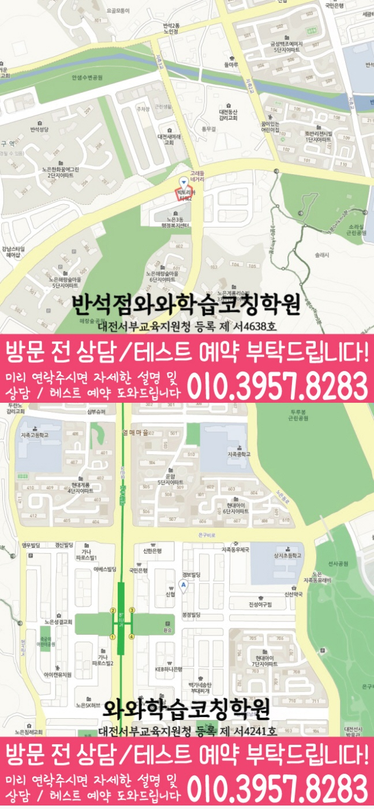

단원별 약점을 빠르게 확인하고, 문법·어휘·독해에서 어디에서 틀리는지 원인을 분류해 학습 순서를 잡습니다.



LOCAL ACADEMY GUIDE
대전 유성구 반석동 중3 영어학원 와와학습코칭센터 반석점 중간·기말 내신 학습 안내
대전 유성구 반석동에서 중3 영어 내신을 준비하는 학생을 위해, 시험 전까지의 학습 흐름을 단계별로 안내합니다. 와와학습코칭센터 반석점은 영어뿐 아니라 수학·국어·영수(영어+수학)까지 함께 점검하며 실력의 빈틈을 정확히 찾아 개념 정리–유형 학습–오답 관리–시험 대비 루틴으로 이어지게 코칭합니다. 학생의 목표와 현재 실력을 기준으로 학습 계획을 조정해 꾸준히 점수로 연결되도록 돕습니다.
반석동 중3 수업의 핵심 포인트
영어는 문법 흐름과 독해 전략을, 수학은 개념–유형–오답을, 국어는 독서/문학 핵심과 문제 풀이를 함께 점검합니다.
선생님 특징
정답만 반복하지 않고, 왜 그 선택이 맞는지 근거를 확인해 이해 기반으로 실수를 줄입니다.
틀린 이유를 유형화해 다시 풀지 않아도 다음 시험에서 같은 실수를 반복하지 않도록 학습 피드백을 제공합니다.
수업 진행방식
1. 현재 수준 확인(중3 내신 기반)
학교 진도, 최근 시험 결과, 자주 틀리는 유형을 바탕으로 반석동 중3 학생에게 필요한 단원을 우선순위로 정리합니다.
2. 개념 정리와 내신 유형 학습
바로 문제풀이로 넘어가기보다 영어 문법·어휘·독해 핵심을 먼저 잡고, 학교 시험 스타일에 맞춘 대표 유형부터 훈련합니다.
3. 오답 관리와 시험 직전 점검
오답노트를 단순 기록이 아니라 ‘다음에 어떻게 풀지’까지 연결해 반복 실수를 차단하고, 시험 전 실전 점검으로 완성합니다.
학년별 학습 전략(중3 중심)
중3
- 내신 범위에 맞춰 영어 문법·독해·서술형 대비 학습을 체계적으로 진행합니다.
- 수학·국어·영수까지 함께 점검해 총점 경쟁력을 높입니다.
- 실수 유형(어휘/문법/독해 논리, 계산·서술)별로 반복 훈련합니다.
시험 대비(중간·기말)
- 시험 전에는 자주 틀리는 유형과 약한 단원을 우선 복습하도록 계획을 조정합니다.
- 시간 배분과 문제 접근 순서를 훈련해 실전에서 흔들리지 않게 만듭니다.
과목 연계(영수·국어 포함)
- 영어는 독해 전략과 문장 해석 규칙을, 수학은 개념과 유형을 연결해 효율을 높입니다.
- 국어는 지문 독해 흐름과 문제 풀이 포인트를 정리해 내신 점수로 이어지게 합니다.
학습 습관 코칭
- 숙제·복습·오답 정리를 루틴화해 수업 시간이 ‘일회성’으로 끝나지 않게 관리합니다.
- 공부 계획을 학생 목표(내신/성적 상승)에 맞게 단계적으로 조절합니다.
대전 유성구 반석동 중3 영어학원을 찾고 있다면 와와학습코칭센터 반석점이 도와드립니다. 현재 실력 진단을 바탕으로 영어(문법·어휘·독해)와 수학·국어·영수까지 함께 점검하며, 내신까지 이어지는 오답 관리와 시험 대비 코칭을 제공합니다. 상담을 통해 반석동 중3 학생에게 맞는 학습 방향을 자세히 안내드립니다.
센터 위치 안내
주소
대전 유성구 지족로 282 코오롱타워2 303,304
오시는 길
~ 와와학습코칭센터 반석점 위치는 (대전 유성구 지족로 282 코오롱타워2 303,304)입니다. 와이식자재마트 대각선, 브래드홀릭 건물 3층
주요 타깃학교(이외 학교도 수업 가능)
초등 타깃학교
새미래초
반석초
중등 타깃학교
새미래중
외삼중
하기중
고등 타깃학교
반석고
노은고
지족고
유성고
과목별 수강 가능 학년
국어
초4
초5
초6
중1
중2
중3
고1
고2
영어
초4
초5
초6
중1
중2
중3
고1
고2
고3
수학
초4
초5
초6
중1
중2
중3
고1
고2
과학
수강 가능 학년 정보 준비중
사회
수강 가능 학년 정보 준비중
학원 등록 정보
수업료는 어떻게 되나요? ✨
A - 서울 (1회 90-100분 수업기준)
| 횟수 | 초등 | 중등 | 고등 |
|---|---|---|---|
| 주 3회 | 249,000 | 266,000 | 299,000 |
| 주 4회 | 319,000 | 341,000 | 384,000 |
| 주 5회 | 389,000 | 416,000 | 469,000 |
B - 서울 외 지점 (1회 90-100분 수업기준)
| 횟수 | 초등 | 중등 | 고등 |
|---|---|---|---|
| 주 3회 | 219,000 | 236,000 | 269,000 |
| 주 4회 | 279,000 | 301,000 | 344,000 |
| 주 5회 | 339,000 | 366,000 | 419,000 |
* 수업료는 지역 및 횟수에 따라 일부 차이가 있을 수 있습니다.
중3 영어 상담부터 오답관리까지 이어지는 흐름
중3 영어는 내신 점수 관리와 고등 영어 준비가 함께 필요한 시기입니다. 상담에서는 학교 시험 범위, 교과서·부교재, 어휘 누적량, 문법 이해도, 독해 속도, 서술형 감점 요인을 함께 확인해 학생에게 맞는 학습 순서를 잡습니다.
현재 수준 확인
최근 시험지, 학교 범위, 단어 암기 상태, 문법 취약점, 독해 속도와 실수 유형을 확인합니다.
문법·독해 진단
문장 구조 분석, 핵심 문법 적용, 지문 주제 파악, 선택지 판단 과정을 나누어 봅니다.
플래너 실행 점검
단어 누적, 본문 암기, 문법 유형 반복, 서술형 복습 계획을 세우고 실제 수행 여부를 확인합니다.
오답 원인 분석
틀린 문제를 어휘 부족, 문법 혼동, 해석 오류, 선택지 판단 실수, 서술형 표현 부족으로 분류해 다음 학습으로 연결합니다.
MIDDLE SCHOOL ENGLISH FAQ
중3 영어학원 FAQ
Q중3 영어는 어떤 부분부터 확인하나요?
학교 시험 범위와 최근 시험지를 바탕으로 어휘, 문법, 독해, 서술형, 듣기 중 어느 부분에서 점수가 흔들리는지 먼저 확인합니다.
Q중3 내신 영어와 고등 영어 준비를 함께 할 수 있나요?
가능합니다. 중학교 내신 범위를 우선 관리하면서 고등 영어로 이어지는 문장 구조 분석, 긴 지문 독해, 어휘 누적, 서술형 표현까지 함께 점검합니다.
Q중3 영어 오답 관리는 어떻게 진행되나요?
틀린 문제를 어휘 부족, 문법 개념 혼동, 지문 해석 오류, 선택지 판단 실수, 서술형 감점 요인으로 나누어 다시 학습합니다.
Q상담 전에 무엇을 준비하면 좋나요?
최근 영어 시험지, 학교 교과서·부교재 범위, 단어장, 수행평가 자료, 자주 틀리는 유형을 준비하면 더 구체적인 상담이 가능합니다.
REAL PARENT REVIEWS
수강생 학부모 후기
반석동 중3 영어학원 정보를 확인하신 학부모님들이 참고할 수 있는 실제 학습 후기입니다.
학생들이 안전하게 다닐 수 있도록 관리해 주십니다.
아이의 실력에 맞춰 수업을 진행해 주셔서 학습 효과가 높았습니다.
단기간의 점수보다 올바른 공부 방법을 알려주셔서 좋았습니다.
수업과 상담 모두 세심하게 진행되어 만족하고 있습니다.
학부모가 놓치기 쉬운 부분까지 세심하게 안내해 주셨습니다.
학습 결과가 좋지 않을 때 원인을 함께 찾아주셔서 도움이 되었습니다.
반석동 관련 학원 페이지
현재 보고 있는 지역 안에서 센터 안내와 학년·과목별 상세 페이지로 바로 이동할 수 있습니다.
반석동 중3 영어학원 상담이 필요하신가요?
중3 영어의 현재 어휘·문법·독해 수준, 내신 대비 계획, 고등 영어 준비, 오답 패턴을 상담문의로 남겨주시면 학습 방향을 구체적으로 확인할 수 있습니다.
상담문의